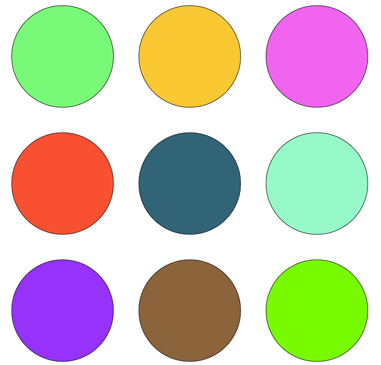

CreateVision
-
Mini-DJ system: Click on above link to open it.
Select a circle to play a music and reselect it to stop it. Try mixing the various sounds and have fun!

-
The small pink circles appear wherever you move your cursor. Open the window through the above link, to enjoy the vision of circle following your mouse.
-
Vision of Rotating Wheel-like design.
-
My (Shubhi's) self-editted Picture.
Website & Designs Created By - Shubhi Singhal